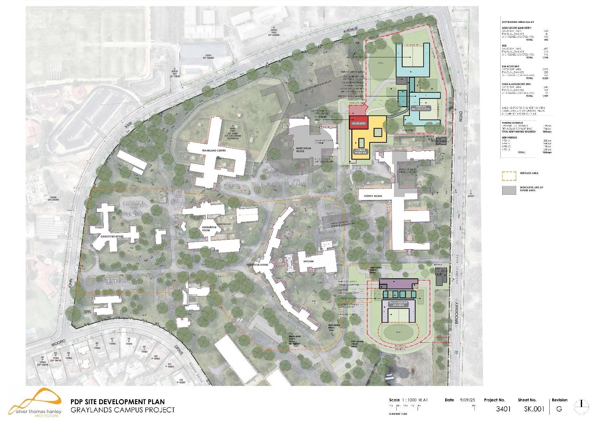
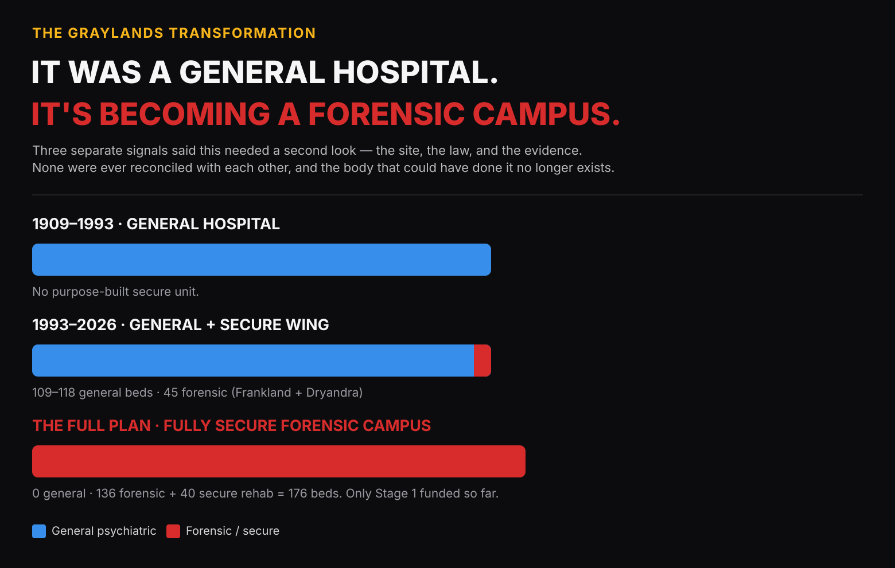

Covering the Graylands Campus Project
This page is a working resource, not a pitch: why this is a story now, four angles, a sourced fact sheet, and what we're not saying. Everything here is consistent with the full research paper.
Why this is a story now. The government's own tender describes the current $197.4 million Stage 1 as the first phase of a programme once costed at $698 million. Spending on it rises from $3.6M last financial year to $107.5M across the next two. It sits inside a wastewater-treatment odour buffer the responsible council's own planning scheme says should exclude it, and asked in Parliament whether that had been risk-assessed, the Minister's answer was three lines long. Infrastructure WA called the original business case inadequate; funding followed three weeks later. No formal consultation with residents or the five nearby schools has been identified in the public record.
What we are not saying
- We are not asking for the project to be cancelled.
- We are not saying forensic mental health patients are dangerous as a class.
- We are not opposing mental health services at Graylands, which has provided them since 1909.
- We are not claiming harm will occur. Our claim is narrower: nobody has published the evidence to show it won't, and a government that overrides its own independent infrastructure advisor carries the burden of showing its work.
Four story angles
1. The state's own infrastructure adviser said the case wasn't strong enough to fund — it was funded three weeks later
In March 2023, Infrastructure WA — the government's statutory independent infrastructure advisor — assessed the business case and found it had "insufficient information on which to base an investment decision." Not a rejection; an evidentiary finding. The government committed $218.9M about three weeks later. No document explaining what changed in those three weeks has ever been published.
2. A hospital expansion inside a sewage-treatment odour buffer
The City of Nedlands' own planning scheme excludes "sensitive land uses" — hospitals included — from the mapped odour buffer around the Subiaco Wastewater Treatment Plant. Asked directly in Parliament in mid-2025 whether a risk assessment had been done, the responsible Minister's full answer was: "Yes, it has been considered as part of the project definition plan." Nothing further was volunteered — no modelling, no conclusion, no published mitigation. Full documented record, including the exact planning clause and the full Hansard exchange, on the odour buffer page.
3. Spending surges past $100 million over the next two years
The WA Government's own 2026–27 Budget Papers list the "Graylands Reconfiguration and Forensics Project" with a five-year spend profile: $3.6M in 2025–26, rising to $20.0M in 2026–27 and $87.5M in 2027–28 — $107.5M across those two years alone — then $75.2M the year after. That ramp is public record, not our estimate. See the Asset Investment Program, Budget Paper (WA Health, Hospitals, Health Centres and Community Facilities).
4. A Cabinet-approved plan exists — but it hasn't answered the community's questions
A government tender confirms an updated business case was approved and Cabinet approved a Project Definition Plan (PDP) in November 2025. We now know the PDP process, underway since at least mid-2025, touched at least heritage and odour-buffer risk — the Minister said so in Parliament (see Angle 2). What nothing published shows is that the same question was ever asked, let alone answered, about site suitability, security, the CLMI Act's changed operating model, or the schools on the boundary. See the full detail.
If the coverage defaults to "residents vs a mental health facility"
One line of context that tends to move past it: same name, same site, new building, new model.
Sourced fact sheet
- Infrastructure WA found the business case had "insufficient information on which to base an investment decision"; government funded it roughly three weeks later Infrastructure WA, Mar 2023
- Project spending rises from $3.6M (2025–26) to $107.5M across the following two years, per the government's own budget papers WA Budget Papers, Asset Investment Program, 2026–27
- Asked in Parliament whether heritage and odour-buffer risk had been assessed, the Minister answered "yes... as part of the project definition plan" with no further detail — the fullest official account of the PDP's contents on the public record Hansard, LA Estimates, 3 Jul 2025
- Site chosen in 2021 from 20 candidates on accessibility and transport criteria only — not security or school proximity Infrastructure WA, Mar 2023
- The Criminal Law (Mental Impairment) Act 2023 replaced indefinite detention with fixed limiting terms and expanded leave and reintegration mechanisms — commenced 1 September 2024 WA Legislation
- Taskforce (GRAFT) dissolved July 2023; no community, school or local government representation confirmed at any stage Campaign timeline
- City of Nedlands has confirmed in writing it received no development application, referral or environmental material as at 17 July 2026 Correspondence page
- The site sits within the Subiaco Wastewater Treatment Plant odour buffer, where the City of Nedlands' own planning scheme restricts sensitive land uses including hospitals The odour buffer page
- Current Stage 1 is funded at $197.4M; the long-term plan Infrastructure WA assessed — 136 forensic beds plus 40 secure rehabilitation beds — was costed at ~$698M, of which only Stage 1 is currently funded Infrastructure WA, Mar 2023
- OMID's project team leads delivery "in consultation with" Health and NMHS — a construction-delivery mandate, not the taskforce GRAFT once was Tender OMID2026071, May 2026
Full sourcing for every figure above is in the Community Research Paper and the Sources page.
Assets
Images already used across the site, gathered here so you don't have to hunt page by page. Click any image to view full size; right-click to save. Provenance and any reuse note is under each one — check it before publishing, since not everything here is ours to license.

The site and its neighbours
Annotated aerial — Graylands campus with John XXIII College, Quintilian, Moerlina, Mount Claremont Primary and the CTRC marked. The single most useful image for establishing context in ten seconds.
Base aerial imagery with our own annotation. Ask if you need an unannotated version or want the base imagery's own source confirmed before use.

The mapped odour buffer
Water Corporation's own Buffer Areas dataset (WCORP-088) — the Graylands site sits inside the hatched zone.
Published on data.wa.gov.au under Creative Commons Attribution — freely reusable with credit to Water Corporation. Basemap © OpenStreetMap contributors.

Stage 1 site development plan
The State's own drawing for what's actually funded and being built now — Silver Thomas Hanley Architecture, SK.001 Rev G, 9 September 2025.
Extracted from the Government's public tender documents (EOI, Schedule 2) — credit the source document.

The full long-term plan — 176 beds
The masterplan option Infrastructure WA actually assessed in March 2023 — the clearest single image of what the full plan looks like beyond the currently-funded Stage 1 slice.
From the Government's own business case materials, reproduced at the resolution available in Infrastructure WA's published report — credit the source.

Distance to Quintilian School
The secure Child and Adolescent Unit's own fenced perimeter sits roughly 400 metres from Quintilian School.
Our own annotation over satellite imagery and the tender site plans — free to use, credit Mount Claremont Community Network.

"Same site, new model" timeline
1909 general hospital → 1993 small secure wing added → 2026 fully forensic campus. The single graphic for the categorical-change frame, if you need an alternative to the safety angle.
Ours — free to use, credit Mount Claremont Community Network. Vector SVG, scales cleanly to any size.
More plans and diagrams — including the CTRC relocation aerial and concept masterplan, the existing site plan, and the full buffer-map background — are on The site and the odour buffer page. Ask if you need something specific redrawn, a higher-resolution crop, or the base files.
Contact
Media enquiries: mtclaremontcommunity@gmail.com. A resident spokesperson — previously quoted in WAtoday and The Post — is available for interview. If we get something wrong, we correct it; see Updates for the record.